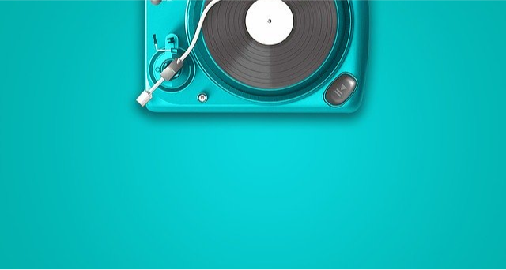
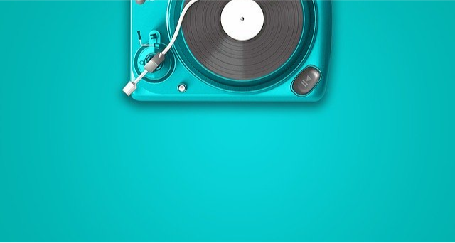
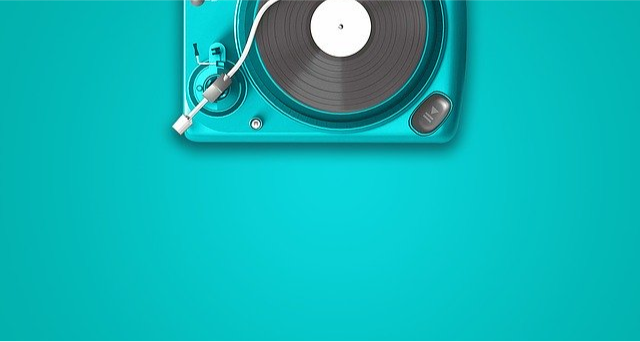

Aquarela
Uma brincadeira com fotos , cores e efeitos, curta, compartilhe e deixe seu comentário, ficarei feliz pelo feedback.
 



Uma brincadeira com fotos , cores e efeitos, curta, compartilhe e deixe seu comentário, ficarei feliz pelo feedback.
